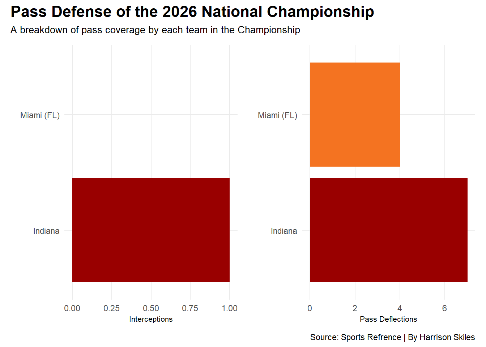
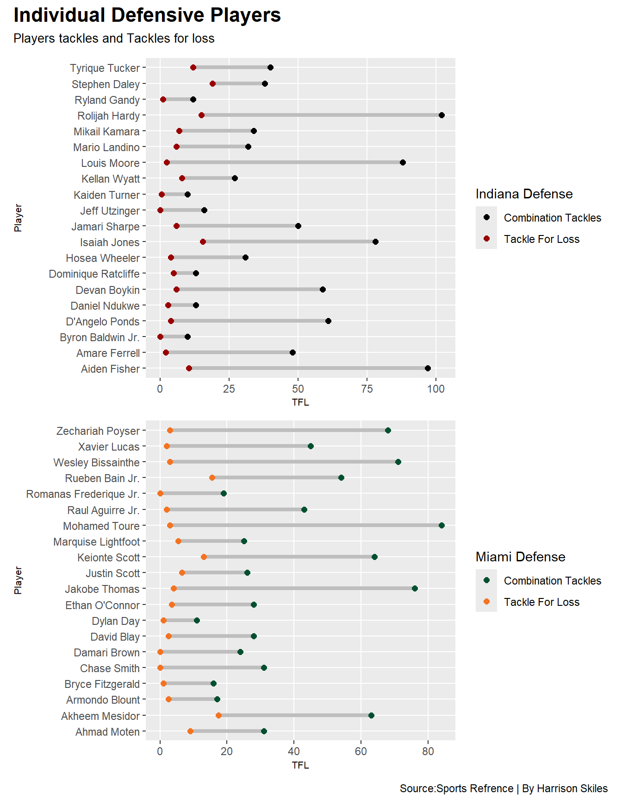
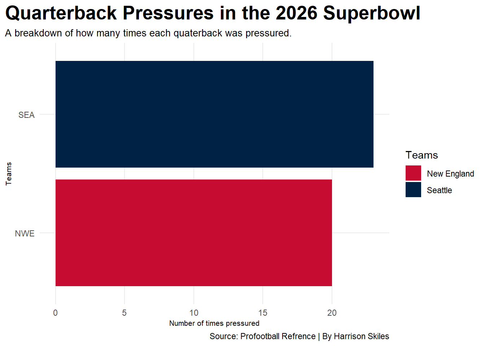

Code
library(readr)
library(tidyverse)
library(dplyr)
library(ggplot2)
library(patchwork)
library(gt)
library(wehoop)Harrison Skiles
April 24, 2026
The age old adage that defense wins championships still gets said all the time, but the sports landscape is constantly changing from the simple toss of the pigskin that your dad knows and loves. Today’s game is faster, more wide open, and built around scoring points. Offenses spread the field, quarterbacks throw more than ever, and it feels like teams can score in just a few plays. With all the big numbers and highlight plays, it can seem like defense does not matter as much anymore. But that is not really true.
Defense is still very important, it just shows up in different ways. Instead of shutting teams down the entire game, good defenses step up in the biggest moments. Third downs, red zone stops, and especially turnovers are what really matter now. One takeaway can completely change a game. It can stop a long drive, swing momentum, and give the offense an easy chance to score. Even if a defense gives up yards, making a play at the right time can be the difference between winning and losing.
That is why the idea of defense winning championships still holds up. It is not about allowing zero yards or completely dominating every play. It is about being smart, staying in position, and taking advantage of mistakes. Teams that protect the ball and force turnovers usually come out on top. In a game where everyone is focused on yards and points, the teams that can create those key moments on defense are still the ones that end up winning when it matters most.
PassDef <- cfb |> filter(School == "Indiana")
Sac <- cfb |> filter(School== "Miami")
PassDef <- ggplot() +
geom_bar(data= cfb, aes(reorder(School,Int), weight= Int), fill= "grey") +
geom_bar( data = cfb, aes(reorder(School, Int), weight= Int), fill="#990000")+
coord_flip() +
labs(
x="",
y="Interceptions"
) +
theme_minimal()
Sac <- ggplot() +
geom_bar(data= cfb, aes(reorder(School,PD), weight= PD, fill=School)) +
scale_fill_manual(values=c("#990000","#F47321")) +
coord_flip() +
labs(
x="",
y="Pass Deflections"
) +
theme_minimal()
PassDef + Sac +
plot_annotation(
title="Pass Defense of the 2026 National Championship",
subtitle= "A breakdown of pass coverage by each team in the Championship",
caption = "Source: Sports Refrence | By Harrison Skiles"
) &
theme(
plot.title = element_text(size=16, face = "bold"),
axis.title = element_text(size=8),
plot.subtitle = element_text(size=10),
panel.grid.minor = element_blank(),
legend.position = "none"
)
Pass defense was a huge factor in the 2026 College Football National Championship, especially when looking at interceptions and pass deflections. Interceptions didn’t happen as often, but they had the biggest impact on the game. Every time a defense picked off a pass, it instantly changed momentum and gave their offense a great chance to score. Even one interception could make a quarterback play more carefully and avoid risky throws.
Pass deflections showed how consistent a defense was throughout the game. These happen when defenders get a hand on the ball and knock it away before it can be caught. While they don’t always lead to turnovers, they make it harder for the offense to complete passes and keep drives going. A team with a lot of deflections is usually playing tight coverage and staying close to receivers.
Indiana <- ggplot() +
geom_segment(
data= IDS,
aes(
y=Player, yend= Player,
x= TFL, xend= Comb),
color = "grey",
linewidth = 1.5
) +
geom_point(
data= IDS,
aes(
y= Player,
x= TFL,
color= "Tackle For Loss"
),
size = 2
) +
geom_point(
data= IDS,
aes(
y= Player,
x= Comb,
color= "Combination Tackles"),
size= 2
) +
scale_color_manual(name= "Indiana Defense", values = c("Tackle For Loss" = "#990000", "Combination Tackles" = "black"))Miami <- ggplot() +
geom_segment(
data= MS,
aes(
y=Player, yend= Player,
x= TFL, xend= Comb),
color = "grey",
linewidth = 1.5
) +
geom_point(
data= MS,
aes(
y= Player,
x= TFL,
color= "Tackle For Loss"
),
size = 2
) +
geom_point(
data= MS,
aes(
y= Player,
x= Comb,
color= "Combination Tackles"),
size= 2
) +
scale_color_manual(name= "Miami Defense", values = c("Tackle For Loss" = "#F47321","Combination Tackles" = "#005030"))Indiana / Miami +
plot_annotation(
title = "Individual Defensive Players",
subtitle = "Players tackles and Tackles for loss",
caption = "Source:Sports Refrence | By Harrison Skiles"
) &
theme(
plot.title = element_text(size= 16, face = "bold"),
axis.title = element_text(size = 8),
plot.subtitle = element_text( size= 10),
panel.grid.minor = element_blank()
)
Indiana and Miami both showed how strong their defenses were through the performance of their top 20 players, especially in total tackles and tackles for loss. Indiana’s group was very consistent, with a lot of players making tackles instead of just relying on one or two guys. This made their defense harder to beat because everyone was involved and doing their job.
Indiana really stood out with tackles for loss. They were able to get into the backfield and stop plays early, which made it tough for offenses to get anything going. These plays showed that they were aggressive and quick to react, often putting the offense behind schedule.
Miami’s defense was a little different but still very effective. Their top players showed a lot of effort by making solid tackles and limiting extra yards. They focused more on keeping plays in front of them and not allowing big gains, which helped them stay in control.
Their tackles for loss still mattered too, showing they could make big plays when needed. Overall, both teams showed that good defense comes from a full group effort. By combining a high number of tackles with key stops behind the line, Indiana and Miami proved they were tough defenses to play against.
Sbtotal |>
gt() |>
cols_label(
TYO = " Total Offensive Yards",
TO = " Turnovers"
) |>
tab_header(
title= "Ball Security and Offensive Possesion",
subtitle= "A comparison of total offensive yards to turnovers"
) |> tab_style(
style= cell_text(color = "black" , weight= "bold", align = "left"),
locations = cells_title("title")
) |> tab_style(
style= cell_text(color = "black" , weight= "bold", align = "left"),
locations = cells_title("subtitle")
) |>
tab_source_note( source_note =md( "By: Harrison Skiles | Source: ProSportsRefrence" ))| Ball Security and Offensive Possesion | ||
| A comparison of total offensive yards to turnovers | ||
| Team | Total Offensive Yards | Turnovers |
|---|---|---|
| Seahawks | 335 | 0 |
| Patriots | 331 | 3 |
| By: Harrison Skiles | Source: ProSportsRefrence | ||
In the most recent Super Bowl, the comparison between offensive yards and turnovers clearly showed why the Seahawks came out on top. Seattle was able to move the ball more effectively, finishing with slightly more total yards while staying in control of their offense. The biggest difference, though, was that they didn’t turn the ball over once.
That clean performance made a huge impact. Every drive had a chance to end in points because they weren’t giving the ball away or putting themselves in bad situations. Even when drives stalled, they were still able to control field position and keep pressure on the opposing team.
On the other side, the Patriots were able to put up a similar amount of yards, which shows they could move the ball too. The problem was turnovers. Giving the ball away multiple times completely wiped out the value of those yards. Instead of turning drives into points, they ended up handing momentum right back to Seattle.
This game showed that yards and production only matter if you protect the football. The Seahawks proved that by combining solid offensive movement with zero mistakes. The Patriots showed the opposite, where turnovers made their offensive numbers much less meaningful.
In the end, it wasn’t just about who gained more yards, but who made the most of their opportunities.
ggplot()+
geom_bar(data = SuperBowl, aes(x=reorder(Tm ,QBHits), fill = Tm ))+
coord_flip() +
scale_fill_manual(
name= "Teams",
values = c("#C60C30", "#002244"),
labels= c("New England", "Seattle")
) +
labs(
x="Teams",
y="Number of times pressured",
title="Quarterback Pressures in the 2026 Superbowl",
subtitle="A breakdown of how many times each quaterback was pressured.",
caption="Source: Profootball Refrence | By Harrison Skiles"
) +
theme_minimal() +
theme(
plot.title = element_text(size = 20, face = "bold"),
axis.title = element_text(size = 8),
plot.subtitle = element_text(size=10),
panel.grid.minor = element_blank(),
plot.title.position = "plot"
) 
Quarterback pressure in this Super Bowl tells an interesting story, especially since the Patriots’ quarterback was actually pressured less. On paper, that usually sounds like an advantage. Less pressure means more time to throw, better decision making, and a smoother offense. And at times that showed, as the Patriots were able to move the ball and put up solid yardage.
But even without heavy pressure, mistakes still happened. Turnovers ended up being the bigger issue, showing that avoiding pressure doesn’t always guarantee success if execution isn’t clean.
On the other side, the Seahawks quarterback faced more pressure throughout the game, but handled it well. Even with defenders getting close and forcing quicker decisions, the offense stayed under control and avoided turnovers. That ability to stay calm under pressure made a huge difference.
This comparison shows that pressure matters, but it isn’t everything. A quarterback can have time and still struggle if mistakes happen, while another can deal with pressure and still succeed by protecting the ball and making smart plays.